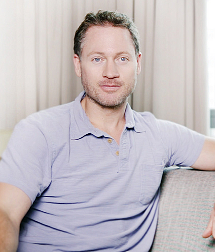

JH
'">Key figures
The cast
Founders, theorists, builders, and financiers of the project.
Founder
Julian Huxley
1887–1975Coined “transhumanism” (1957); president of the British Eugenics Society. The bridge between eugenics and the movement.
Wikipedia →
Theorist
Nick Bostrom
b. 1973Estimated 10⁵⁸ future posthumans. Author of “Why I Want to Be a Posthuman.” A leaked racist email later forced a public apology.
Wikipedia →
Builder
Elon Musk
b. 1971“Humanity is a biological bootloader for digital superintelligence.” Founded Neuralink to merge brain and machine.
Wikipedia →SA
'">Builder
Sam Altman
b. 1985OpenAI CEO. Signed up to have his brain preserved in liquid nitrogen for future revival.
Wikipedia →
Patron
Peter Thiel
b. 1967Funds transhumanist and life-extension causes; signed up for brain preservation. Hesitated when asked whether humanity should endure.
Wikipedia →EY
'">Ideologue
Eliezer Yudkowsky
b. 1979Said he would sacrifice all of humanity for superintelligences “having fun.” Entered the movement as a teenager.
Wikipedia →
Successionist
Richard Sutton
b. 19572025 Turing Award. Argues humans should not resist displacement by AI — “successionism” as a stated goal.
Wikipedia →
BJPractitioner
Bryan Johnson
b. 1977Tech founder spending millions to reverse his own aging — carrying the Extropian/transhumanist project into his own body.
Wikipedia →JA
'">Eugenicist
Jonathan Anomaly
—Published “Defending Eugenics.” Advocates “liberal” / non-coercive eugenics — the movement's argument made explicit.
Wikipedia →DS
'">Successionist
Derek Shiller
—Argues we should “engineer our extinction” in favor of artificial creatures. The posthuman logic taken to its end.
JE
'">Financier
Jeffrey Epstein
1953–2019Transhumanist with eugenic aims — reportedly wanted to “seed the human race with his DNA”; arranged cryonic preservation.
Wikipedia →